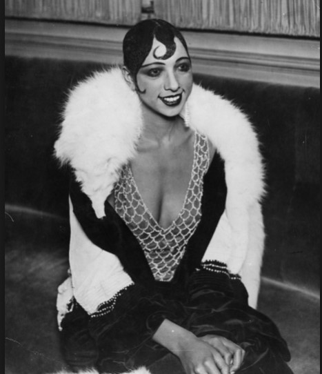

Josephine Baker was born as Freda Josephine McDonald in St. Louis Missouri on June, 3 1906. She was born at a time when the lines of racial segregation in American were drawn in thick bold lines and St. Louis Missouri was no different. Being a Negro at this time in America was oppressive and degrading. In spite of the toxic atmosphere of America, her talent allowed her to rise above the indignations of her black skin. Baker grew up fatherless and in poverty. Between the ages of 8 and 10 she was out of school, helping to support her family. As an adolescent she became a dancer, touring at 16 with a dance troupe from Philadelphia. In 1923 she joined the chorus in a road company performing the musical comedy Shuffle Along and then moved to New York City, where she advanced steadily through the show Chocolate Dandies on Broadway and the floor show of the Plantation Club, where again she quickly became a crowd favorite. In 1925, at the peak of France’s obsession with American jazz, Baker traveled to Paris to perform in La Revue Nègre at the Théâtre des Champs-Elysées. She made an immediate impression on French audiences. However, it was the following year, at the Folies Bergère music hall that Baker’s career would reach a major turning point. In a performance called La Folie du Jour, Baker danced wearing little more than a skirt made of 16 bananas. The show was wildly popular with Parisian audiences and Baker was soon among the most popular and highest-paid performers in Europe, having the admiration of cultural figures like Pablo Picasso, Ernest Hemingway and E. E. Cummings and earning herself nicknames like “Black Venus” and “Black Pearl.”
In 1937, Baker married French industrialist Jean Lion and obtained citizenship from the country that had embraced her as one of its own. During the early months of World War II, when Germany occupied Belgium, Baker became a Red Cross nurse, watching over refugees, or those who were forced to flee their countries. During the German occupation of France, Baker was a spy for her adopted country. As a member of the Free French forces she entertained troops in both Africa and the Middle East. Most importantly, however, Baker did work for the French Resistance, smuggling messages hidden in her sheet music and even in her underwear. For these efforts Baker was awarded both the Croix de Guerre and the Legion of Honour with the rosette of the Resistance, two of France’s highest military honors.
 In 1936, she returned to the United States to star in the Ziegfeld Follies. This proved to be disastrous, despite the fact that she was a major entertainment star in Europe. American audiences rejected the idea of a black woman with so much sophistication and power. The newspaper reviews were cruel, The New York Times called her a negro wench. Josephine Baker returned to Europe heartbroken. After spending years avoiding the United States, in the 1950s, Baker frequently returned to the United States to lend her support to the Civil Rights Movement, participating in demonstrations and boycotting segregated clubs and concert venues. In 1963, Baker participated, alongside Martin Luther King Jr., in the March on Washington, and was among the many notable speakers that day. In honor of her efforts, the NAACP eventually named May 20th “Josephine Baker Day.After decades of rejection by her countrymen and a lifetime spent dealing with racism, in 1973 Baker performed at Carnegie Hall in New York and was greeted with a standing ovation. She was so moved by her reception that she wept openly before her audience